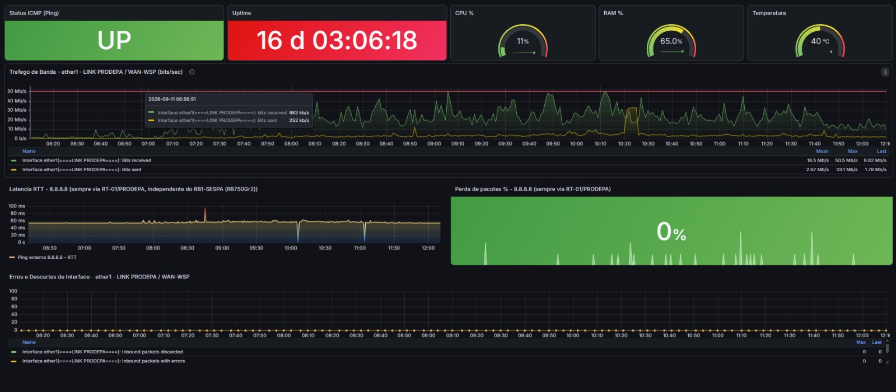
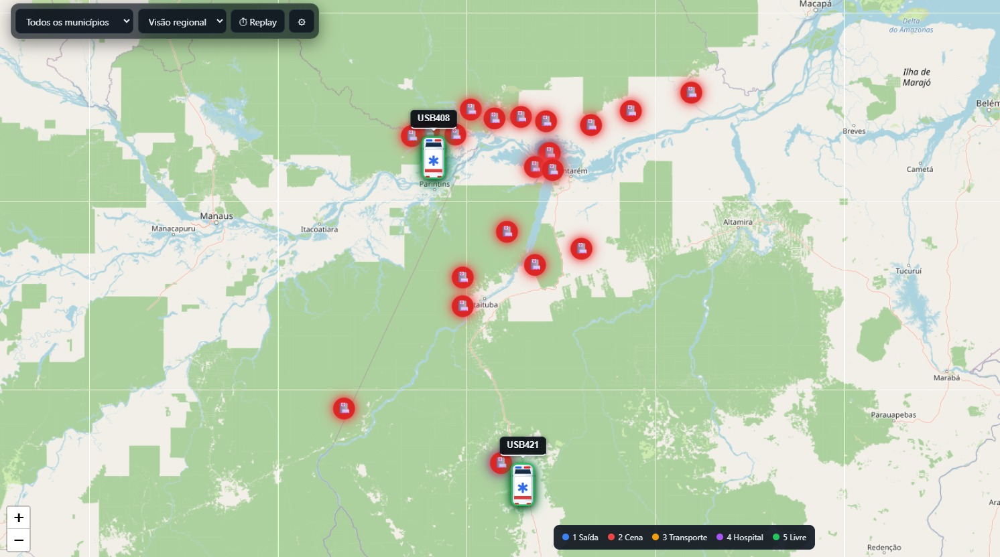
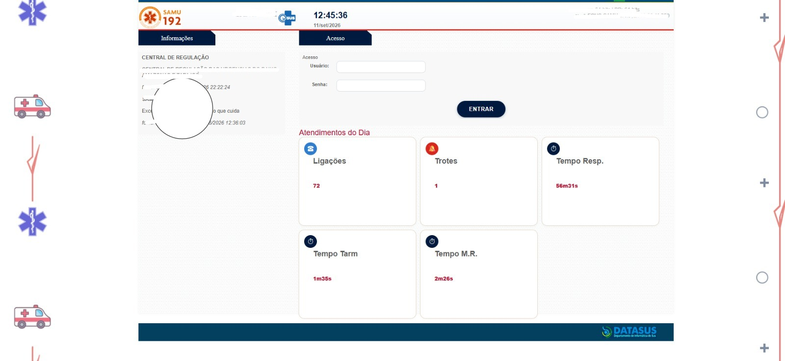
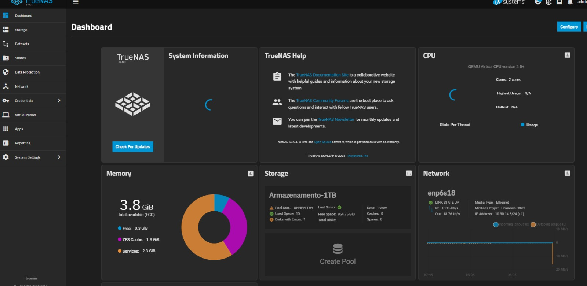
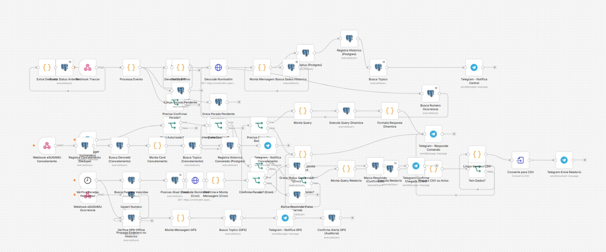

Técnico em Redes · Suporte N1/N2 · Infraestrutura de TI
CRU · SESPA · SAMU
Administração de servidores Linux/Windows, monitoramento de infraestrutura crítica (Zabbix/Grafana)
e automação (N8N, Python) aplicada ao setor público de saúde.

Monitoramento Crítico
Implantação e gestão de monitoramento de servidores, redes e serviços críticos em tempo real, com alertas proativos e dashboards de disponibilidade.
ZabbixGrafanaMonitoramento

Rastreamento e Frota
Gestão da plataforma de rastreamento veicular da frota do SAMU, garantindo localização em tempo real e suporte às equipes de emergência.
TraccarGPSSAMU

Ecossistema de Saúde
Suporte técnico e administração dos sistemas e-SUS SAMU e do Sistema de Tratamento Fora de Domicílio (TFD), assegurando continuidade do atendimento.
e-SUSTFDSaúde Pública

Infraestrutura & Redes
Administração de storage e backups em TrueNAS, gestão de chamados via GLPI e configuração de redes corporativas na SESPA e SAMU.
TrueNASGLPIRedes

Sistemas & Automação
Desenvolvimento e manutenção da intranet do CRU e de sistema de gestão financeira, automatizando processos internos com N8N e Python.